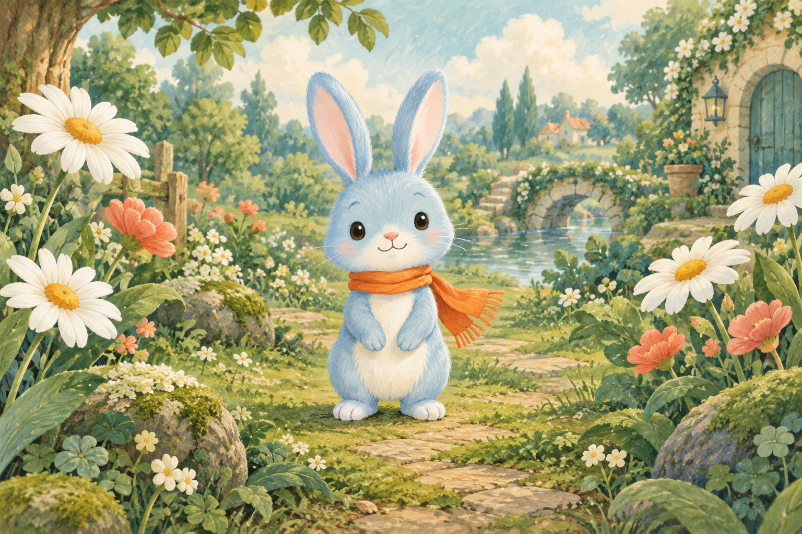
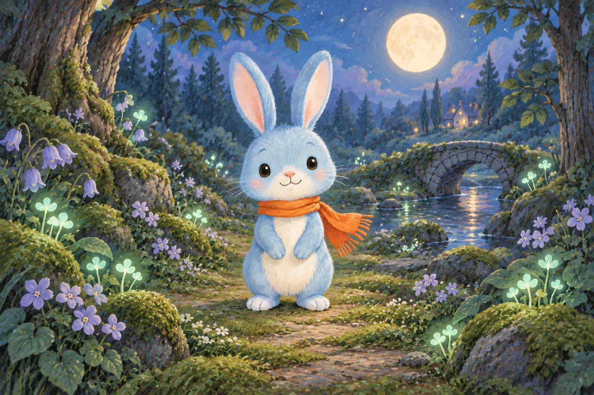
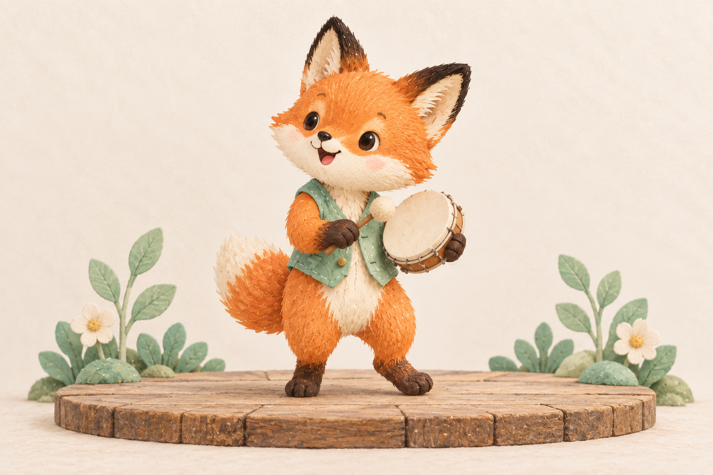
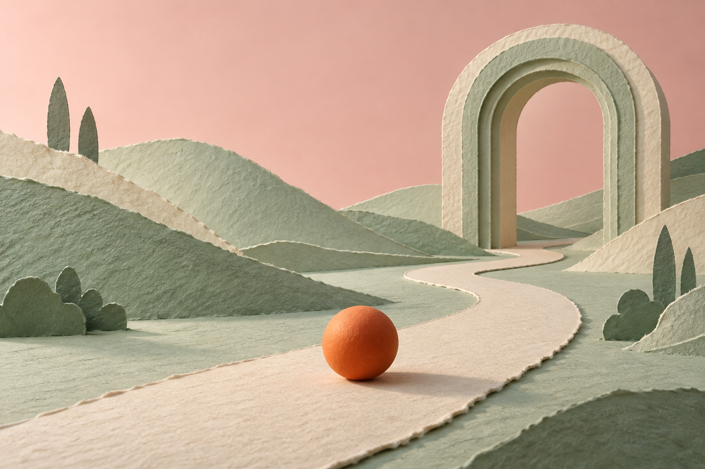
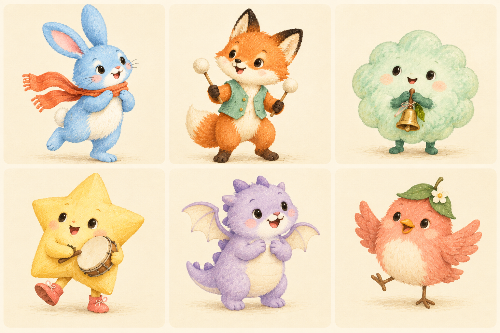
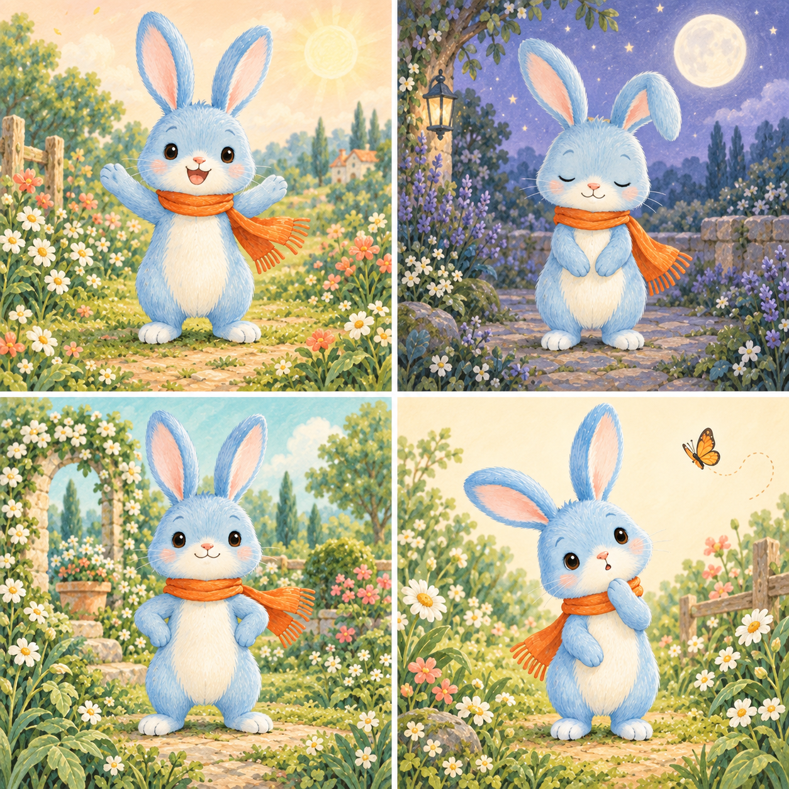
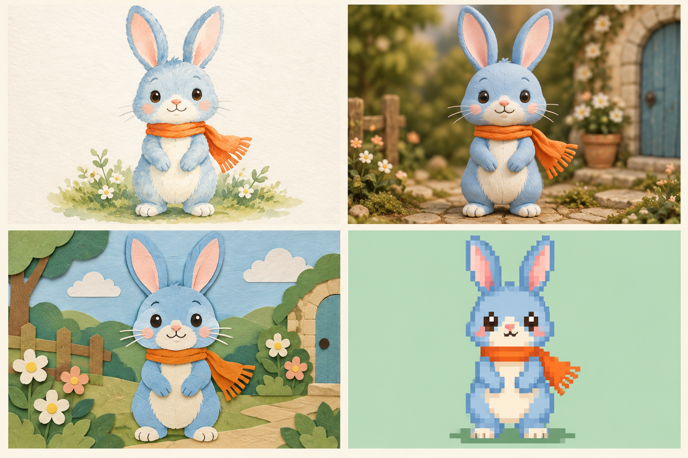
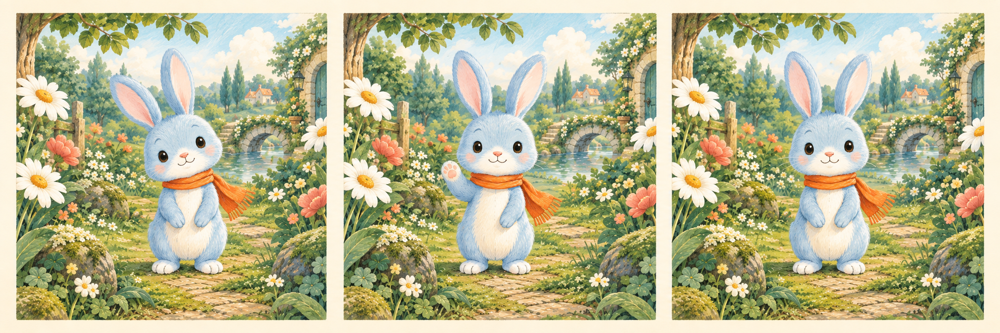
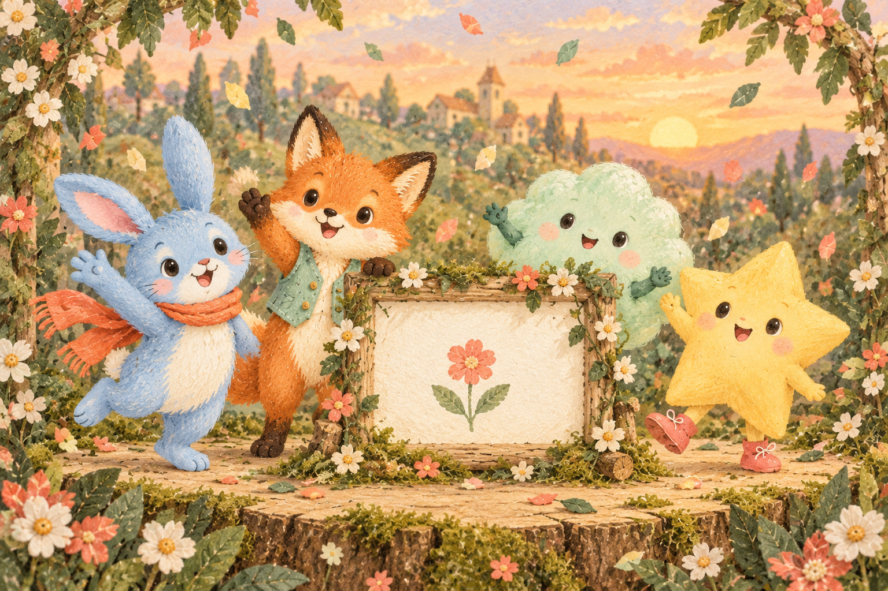

그림 문장 틀
[특징]을 가진 [주인공]이 [장소]에 있어요. [그림 느낌]으로 그려 주세요.
대괄호 안을 나의 소재로 바꿉니다. 클래스 1은 그림과 움직임, 클래스 2는 장면과 게임 규칙을 만듭니다.
[특징]을 가진 [주인공]이 [장소]에 있어요. [그림 느낌]으로 그려 주세요.
주황 목도리를 한 파란 토끼가 꽃이 피는 정원에 서 있어요. 온몸이 보이는 부드러운 그림책 그림.
민트 조끼를 입은 작은 주황 여우가 손북을 들고 작은 무대에 서 있어요. 온몸이 보이는 찰흙 인형 느낌으로 그려 주세요.
주인공의 색과 목도리는 유지하고, 배경만 달빛이 비치는 숲으로 바꿔 주세요.
[주인공]이 [행동 하나]를 [천천히 / 가볍게] 해요. 카메라는 가만히 있어요.
토끼가 앞발을 천천히 한 번 들어 인사해요. 주황 목도리가 살짝 흔들려요. 카메라는 가만히 있어요.
여우가 앞발로 손북을 한 번 가볍게 두드려요. 카메라는 가만히 있어요.
행동을 더 작고 천천히 해 주세요. 주인공의 모습과 배경을 유지해 주세요.
별칭 ____________ 제목 __________________________
1. 주인공 / 특징 / 장소 / 그림 느낌
2. 내가 사용한 그림 문장
3. 내가 고른 그림과 그 이유
4. 한 가지 움직임을 부탁하는 문장
5. 영상에서 좋았던 점 / 다음에 바꿀 점
저장 확인 □ 그림 □ 영상 또는 시작·끝 그림 □ 사용한 문장
[대상]이 [공간]에 있다. [색과 빛], [재질과 구도]. [전하고 싶은 느낌]. 불필요한 문자와 로고 없이.
어두운 청록색 공간에 반투명한 둥근 빛의 형태들이 떠 있다. 작은 주황빛 구체와 은은한 반사가 보인다. 고요하고 부드러운 미디어아트 장면.
[대상]이 [작은 동작]을 [속도]로 한다. [유지할 요소]는 유지된다. 카메라는 고정된다.
가운데 둥근 빛이 천천히 한 번 커졌다가 원래 크기로 돌아온다. 작은 입자들이 가볍게 떠오른다. 카메라는 고정된다.
브라우저에서 실행되는 한 화면짜리 “빛 모으기” 웹 게임을 만들어 줘. 어두운 청록 배경에 주황색 빛 하나를 보여 줘. 시작 전에는 0점·20초와 시작 버튼을 보여 줘. 시작하면20초 동안 빛을 클릭하거나 터치할 때마다1점이 오르고, 빛이 게임 영역 안 다른 위치로 이동하게 해 줘. 점수와 남은 시간을 항상 보여 줘. 시작 전과0초가 된 뒤에는 클릭해도 점수가 바뀌지 않게 해 줘. 종료하면 최종 점수와 다시 시작 버튼을 보여 주고, 다시 시작하면0점·20초로 초기화해 줘. 게임에 로그인·결제·데이터베이스·외부API·생성형AI 호출 기능은 넣지 말고 기본 도형으로 구현해 줘.
빛의 클릭 영역을 지금보다 크게 해 줘. 게임 영역 밖으로 나가지 않게 하고20초·점수·종료·다시 시작 규칙은 그대로 유지해 줘.
시간이0초가 된 뒤 빛을 클릭했는데 점수가 올라갔어. 종료 후에는 점수가 바뀌지 않아야 해. 이 동작만 고치고 다시 시작 기능은 유지해 줘.
[어떤 입력]을 하면 [어떤 조건]일 때 [무엇이 어떻게 바뀌는지] 정해 줘. 시작 상태는[값], 종료 조건은[조건], 다시 시작하면[초깃값]으로 돌아가게 해 줘.
별칭 ____________ 작품의 느낌 _______________________
1. PixVerse: 이미지·영상 문장 / 선택한 이유
2. 게임 규칙: 입력 → 조건 → 반응
3. 상태: 시작 전 / 진행 중 / 종료 / 다시 시작
4. AI Studio에 보낼 첫 요청문 (또는 시연 관찰)
5. 한 가지 수정: 한 행동 / 실제 결과 / 기대한 결과
시험 □ 시작 전 0점 □ 클릭 +1 □ 종료 후 점수 고정 □ 재시작
저장 □ 장면 □ 요청문 □ 게임 화면 또는 규칙 카드·관찰 기록

영상 첫 이미지
PNG 내려받기
장소 비교 · 영상 첫 이미지
PNG 내려받기
영상 첫 이미지
PNG 내려받기
컨셉 이미지 · 영상 첫 이미지
PNG 내려받기
컨셉 이미지 · 영상 첫 이미지
PNG 내려받기
감상·이야기 만들기
PNG 내려받기
선택·비교 자료
PNG 내려받기
표정·색 비교
PNG 내려받기
화풍 비교
PNG 내려받기
시작·중간·끝 예상 그림
PNG 내려받기
마무리 그림
PNG 내려받기